|
Quarantine Cup 2020 Preview . Opening Day - April 2 . April 4 . April 6 . . April 8 . April 11 . April 14 . April 16 . April 19 . April 23 . April 27 Tiger King Day . April 30 . May 2 - Superhero Day Doubleheader . May 6 . May 9 . May 12 . May 15 . May 17 . May 25
Quarantine Cup 2020 Set to Debut April 2 March 31 – With the Covid-19/Coronavirus devastating the sports world, the Quarantine Cup is set to open on Thursday, April 2nd. The worldwide sports vacuum led to the idea - the brainchild of Patrick Cork - whose past Commissioner experiences will be put to the test. "22 years heading up the Cork Bowl football league and another 12 years as Chair Baseball Commissioner have prepared me for this day," remarked Cork. "There are no other live sports in the world. Everyone needs this and we don't want to let the world down. Sure there's a lot of pressure, but I think the boys and I are up to the challenge. It's a unique opportunity to say the least, but we're planning on taking it and running with it."
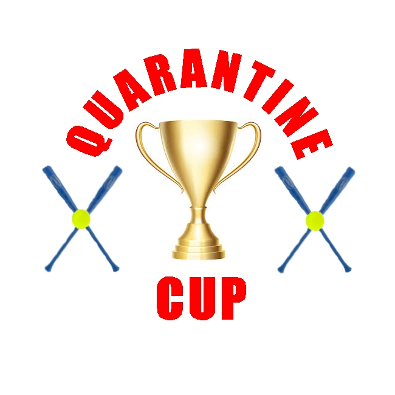 There is a possibility of doubleheaders, maybe even tripleheaders if the situation presents itself. "We're not going to guarantee a certain number of games per week, but we'd like to get at least five games in a week," added Cork. "People are desperate for something they can check in on. We all miss highlights before we go to bed and waking up in the morning and checking scores. If we can provide just a little bit of normalcy, then we've fulfilled our purpose." All games will be recorded and a highlight montage will be aired SportsCenter-style on the league's YouTube channel . The league will plan to keep cumulative statistics for the season and welcomes all legal sports gambling. "I know there are plenty of gamblers going through withdrawal these days. We're here for them too," added Cork.
The first spring training game was played on Monday, and another day of practice is scheduled for Wednesday. Then the real games begin. "The boys are ready to go. There is definitely some nervousness involved for all of us knowing we've got the entire world watching, but once we get on the field and the first pitch is thrown, it's just a game."
April 2 - Opening Day April 2 – Game 1 Highlights
Ethan 5-8, (4) 1B, 2B, RBI
Jacob 4-8, (4) 1B, 4 RBI Pitching
Patrick (L) 3K's April 4 - Game 2 April 4 – Game 2 Highlights
Ethan 3-8, (3) 1B
Jacob 2-6, (2) 1B, RBI Pitching
Caleb (L) 2K's April 6 - Game 3 April 6 – Game 3 Highlights
Ethan 6-6, 2B
Jacob 3-8, (3) 1B, 2RBI Pitching
Patrick 2K's April 8 - Game 4 April 8 – Game 4 Highlights
Wacky Wednesday - opposite-handed batting Ethan 2-4, 1B, RBI
Jacob 4-5, (2) 1B, 2B, 3B, 2RBI Pitching
Ethan (L) 1K April 11 - Game 5 April 11 – Game 5 Highlights
Jacob 3-7, (2)1B, 2B, RBI
Ethan 5-7, (3) 1B, (2)2B, RBI Pitching
Caleb (L) 3K April 14 - Game 6 April 14 – Game 6 Highlights
Ethan 9-12, (5)1B, (4)2B, 6RBI
Jacob 6-9, (5) 1B, 2B, 2RBI Pitching
Jacob (L) April 16 - Game 7 April 16 – Game 7 Highlights
Jacob 5-8, (4)1B, 2B, RBI
Ethan 3-7, (2)1B, 2B Pitching
Caleb (L) 2K 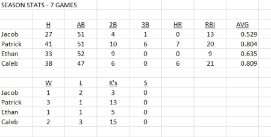 April 19 - Game 8 April 19 – Game 8 Highlights
Ethan 2-5, (2)1B
Jacob 5-7, (4)1B, 2B, 4RBI Pitching
Ethan (L) K 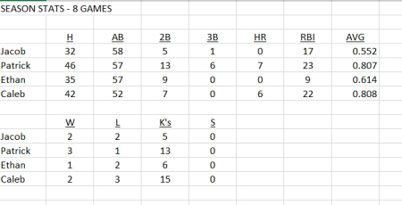 April 23 - Game 9 April 23 – Game 9 Highlights
Jacob 6-9, (2)1B, (3)2B, HR, 5RBI
Ethan 5-10, (5)1B, 3RBI Pitching
Ethan (L) 3K 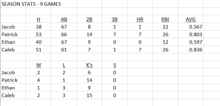 April 27 - Game 10 Tiger King Day April 27 – Game 10 Highlights
Ethan 9-10, (7)1B, 2B, 3B, 3RBI
Jacob 3-6, (3)1B, RBI Pitching
Jacob (L) K 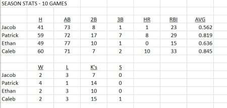 April 30 - Game 11 April 30 – Game 11 Highlights
Jacob 7-7, (6)1B, 2B, 3RBI
Ethan 0-3 Pitching
Caleb (L) 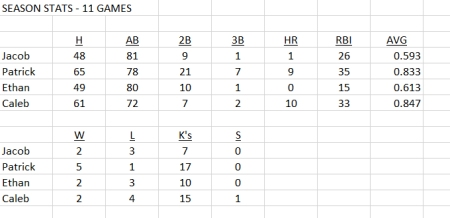 May 2 - Game 12 - Superhero Day May 2 - Game 1 – Game 12/13 Highlights
Ethan 6-8, (4)1B, 2B, HR, 4RBI
Jacob 3-6 (3)1B, RBI Pitching
Jacob (L) 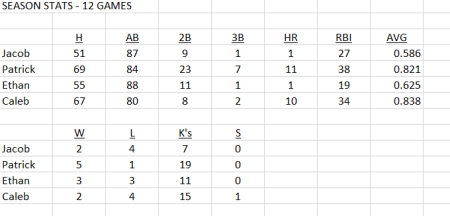 May 2 - Game2 – Game 12/13 Highlights
Jacob 0-3
Ethan 4-6 (3)1B, 2B, RBI Pitching
Jacob (L) 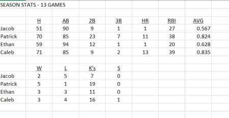 May 6 - Game 14 May 6 – Game 14 Highlights
Ethan 0-3
Jacob 3-5, 1B, (2)2B, 3RBI Pitching
Ethan (L) K 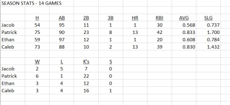 May 9 - Game 15 May 9 – Game 15 Highlights
Jacob 6-8, (3)1B, (3) 2B, 2RBI
Ethan 2-4, 1B, 2B, RBI Pitching
Caleb (L); 2K 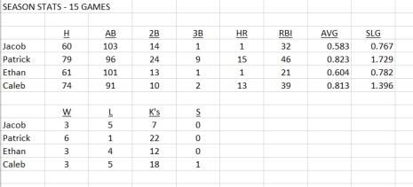 May 12 - Game 16 May 12 – Game 16 Highlights
Ethan 5-8, (2)1B, (2)2B, HR, 4RBI
Jacob 4-8, (3)1B, 2B, 3RBI Pitching
Caleb (L) K 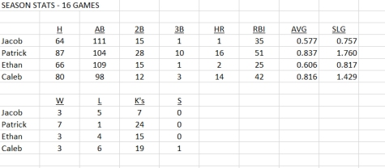 May 15 - Game 17 May 15 – Game 17 Highlights
Jacob 2-6, (3)1B, (2) 1B, RBI
Ethan 4-6, (4)1B Pitching
Caleb (W); 3K 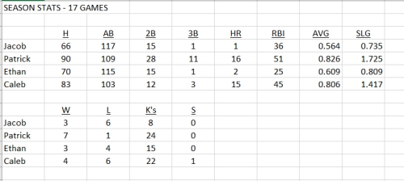 May 17 - Game 18 May 17 – Game 18 Highlights
Ethan 1-6
Jacob 3-5, (3)1B Pitching
Caleb (L) K 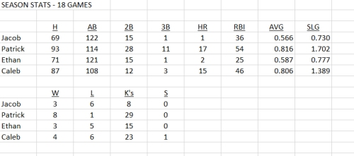 May 25 - Game 19 May 25 – Game 19 Highlights
Jacob 3-8, 1B, (2) 2B, 2RBI
Ethan 8-11, (7)1B, 2B, 2 RBI Pitching
Caleb (W); 4K 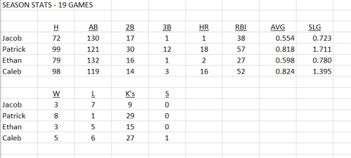 |